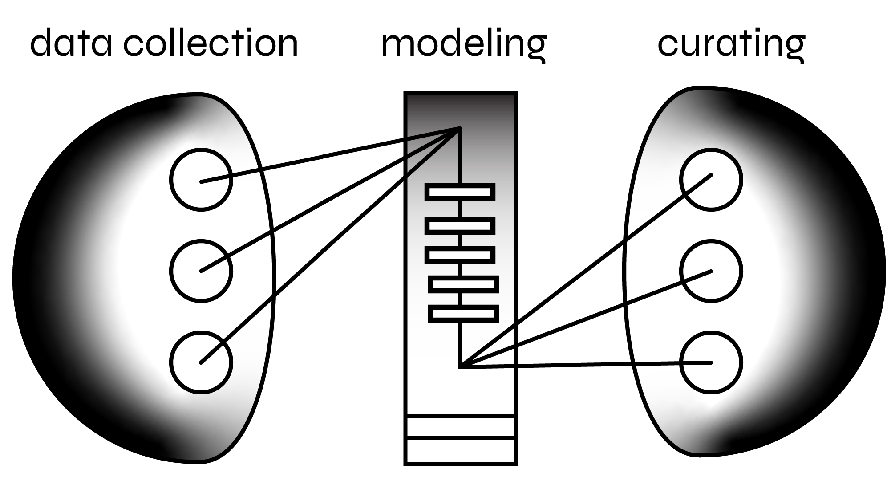

The complexities of AI can be opaque and deceiving. We blend art, science, engieering and design to make AI tangible, playful and responsible.
Many people are involved in the production of AI Art, but here are our main contributors

Matt Groh
Matt Groh is an artist, scientist, engineer and designer.

Zivvy Epstein
Zivvy Epstein is a PhD student at MIT who studies how and why people trust AI-mediated systems.

Abhimaynu Dubey
Abhimanyu Dubey am a Ph.D. student in the Human Dynamics group at MIT. His research focuses on robust and cooperative machine learning, including problems in multi-agent decision-making and transfer learning.

Oceane Boulais
Océane Boulais works at the intersection of computational design, computer vision and marine stewardship. She is a graduate from the MIT Media Lab’s Responsive Environments group and the Open Ocean Initiative.